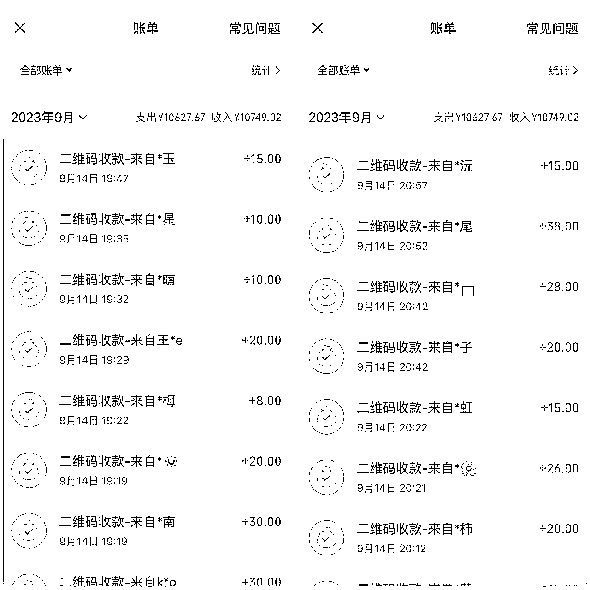

来源：https://d8ez8yi1x2.feishu.cn/docx/GX0Udy7nAoD1cQxvAZDc4H4zn2l
成本我找到了源头厂家，订了1000个。发簪和灯笼的价格低于全网同款质量的价格，大概4元多一个。利润很大，我卖20元一个，基本没有人讲价。有讲价的如果卖两个以上，我最多少2元。所以利润一个在16元左右
不过在这之前，也是踩了好多坑，拼多多发来好几家质量都不行。要么颜色掉漆，要么灯不亮，要么看着质感不行
前期先在拼多多买了169个发簪来，有两家的算下来5.7元一个，质量是真的很水退货了。之后又前前后后买了七八家店铺，有一家质量一般般的，价格都在5.5元一个
这家店铺我是真的踩坑了，一共也就买了20个发簪，不夸张的讲七八个都有问题。价格还5.7一个。细节的地方真的很不好，有些地方居然还掉色了，珍珠也一直掉。最后没办法只能退货
来来回回找质量好的货源也是头疼，退货都退了三次，全都是因为质量问题。所以我决定连夜找厂家，终于功夫不负有心人，我找到一个源头厂家。质量非常好，这里也不是一踩一捧，都是实话实说。我全部都拍了实拍图，对比真的太明显了，除了质量对比，价格也差得大
现在的厂家款式，这些是我昨天晚上摆摊的时候原相机拍的。古典华丽的造型，美得像一件有文化底蕴的艺术品一样，戴在头上尽显东方美感。发簪点亮之后更是美出新高度，感觉仙气要从灯光里溢出来了一样~
要是中秋夜穿着华美的汉服，再戴着发光的发簪走在街上，那今天的限定嫦娥就是你！毫不夸张！不仅汉服，其他优雅的小裙子或者新中式穿搭，这款发簪都能完美适配~日常穿搭也可
有这样一个绝美的mini补光道具在，拍照想不出片都难~
珍珠兔子款式的发簪非常适合兔年戴，金属镂空造型的小兔子可爱精致又不失华丽，身上还有个圆形的福字，寓意美好，下面坠着几串珍珠，更添灵动感。金兔子搭配白珍珠像月宫仙兔，搭配红珍珠则是喜庆富贵兔，兔年中秋戴玉兔发簪，真的再合适不过了
珍珠凉亭款式的发簪是以中国古代建筑飞檐翘角凉亭为灵感设计的，别看它小，但是造型玲珑有致，颇有神韵，搭配不同颜色的珍珠呈现出的气质也不一样，白色珍珠仙气十足，红色则是富贵吉祥的感觉
珍珠灯笼款式的发簪真的可以用古典大气来形容，金属镂空的圆灯笼古韵十足，非常耐看，金灯笼搭配白珍珠优美典雅，搭配红珍珠明艳吸睛。并且这款走路会响，有风铃的声音
宝莲灯这款发簪也很绝，简直是把中秋花灯做成了发簪，圆形「灯框」中间是一朵盛开的金色莲花，底下还坠着红色流苏吊坠，点亮之后它就变成了寓意团圆和美的莲花花灯，将它戴在头上真的别有韵味
而且每款发簪都有一个共同的、非常别致的设计：簪棍和吊坠的连接处是手拈莲花的造型，莲花下面坠着各种灯笼造型的吊坠，看起来就像有一只纤细柔美的手提着中秋花灯一样
发簪都是合金+亮面珍珠材质，颜色和光泽度都非常好，戴在头上很显气质，戴一个或者多挑几款一起戴都好看，怎么搭都美~
簪子发光是靠上面的一个发光灯珠，拔出插片则发光，插入插片则不发光，每个灯珠能保持亮度4-5个小时左右，然后慢慢变弱。如果对佩戴时间要求较高，可以选购加配备用灯珠的规格
也是一样先来看成本和利润，成本也是四块多（我晓找的厂家价是这个）卖15元一个
可别小瞧这个竹编灯笼，它的设计灵感来自于潮汕传统竹灯笼，在潮汕方言中，「灯」与「丁」同音，「竹」与「德」同音，所以潮汕竹编灯笼有着「财丁兴旺」、「德泽绵长」的吉祥寓意，在各种新式灯笼流行的今天，依然有很多潮汕居民会在年节时挂上传统竹灯笼祈福纳祥
其中木簪款设计的非常精巧，黑色手提杆的一端是幻彩珠子和中国结花牌，竹编灯笼由一根金属丝吊在祥云花牌上，灯笼下面还坠着一枚白玉质感的莲花吊坠，古朴大气，像是神女戴的木簪一样
而且灯笼是非常柔和的暖色灯光，在夜里点亮它，简直像是给周身镀上了一层仙气飘飘的柔光，氛围感拉满~
要非问它有哪些功能，那就是这几个了
1.寓意很好
2.可作为挂件或摆件，挂于汽车内、置于桌面上，随手一放就是一道独特的风景线
3.拍照打卡
4.可作为婚嫁用品，订婚、领证甚至婚礼上，都可以用到。手捧花这些都可以用这个挂在上面装饰
我是在大学城里卖，附近如果有学校，大学，公园，夜市也会非常好卖。有景区的话就再好不过了，人流量大的地方都会好卖。只要人群一聚集过来看，一堆人马上就围着来看
我每天八点出摊，十点收摊。因为平时还要练车，管理闲鱼团队，写文章等等。白天就不去卖，只是晚上忙完了去，每天摆摊两个小时，收入在300元左右

最好卖的时间段就是19：00～20：30这段时间，因为这个产品的特点就是有个灯会亮。晚上一打开灯很绝，能吸引到一堆路过，逛街的人，很耀眼
收款有个8元和10元的另外两个小玩意儿，我还在测试好不好卖，要是好卖了再来告诉大家
很简单的，买一个竹编的手提篮来，里面放上泡沫就可以插灯笼和发簪了。直接用纸箱或者泡沫箱不好看，本来就是卖一个好看和氛围感。类似这样就可以，不累轻松，省事儿，还好看
我是用了一个提篮，加一个背篓和草帽盖。因为有的时候光提篮的货不够卖，所以就背着点，提着点。到地方可以放下来
1.地区
一定要考察好地区，不然就会出现像小红书那样，进了以后卖不出去
2.消费能力
消费能力低的城市可能就灯笼卖十块，发簪卖15块。我这里大学城消费能力还可以，他们基本出去买一杯奶茶也是二十块钱。买一块提拉米苏也是二三十，并且我经常在附近买发簪，不发光的都是25-30一个。所以我的这个卖15-20基本一来就买，讲价的很少
3.选好地方
比较好卖的就是一些十字路口，夜市，景区，公园，大学城附近。我这里是属于大学城附近，所以发簪比灯笼好卖。有天晚上拿到一个公园门口，发现灯笼又比发簪好卖。就是看人群，公园门口小孩多，所以灯笼好卖
4.一定要会讲话
这里就是靠自己慢慢摆出经验了
之所以小红书有很多对这个摆摊踩坑的，大多都是因为没有提前考察。没有经验，所以大家多注意